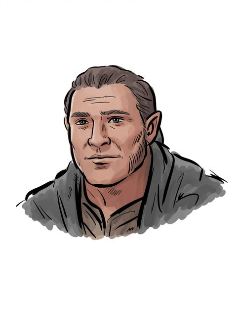

Tar-Meneldur
Line of Elros
Line of Elros (S.A.–S.A. 942)
Open the full record in the living archive →Part of the Arda Archive — a corpus-first index of Tolkien's legendarium; every fact cited, every silence declared.

Line of Elros
Line of Elros of Númenora
S.A.–S.A. 942b
GENERATED. Ideogram V3, driven by a prompt written in this archive; no illustrator drew it and it must never be presented as though one had. Ruling 3 asks for the hand and this IS the hand -- 'generated' is an answer, 'unknown' would not be.c
“cliffs. Here was the abode of many eagles; and in this region Tar-Meneldur Elentirmo built a tall”d
“Tales p. 199) the letter of Gil-galad to Tar-Meneldur opens ‘Ereinion Gil-galad son of”e
“Vardamir, Tar-Amandil, Tar-Elendil, Tar-Meneldur, Tar-Aldarion, Tar-”f
a The text — UT, The Line of Elros [C]
b The text — [I-H]
c The ruling — the owner's ruling of 13 August 2026, on the 552 generated images: 'we are free to use them'. That settles the LICENCE and does not settle the HAND, which is recorded above as what it is. [C]
d The text — t1_d_unfinished_tales_of_numenor_and_middle_earth.txt:5224 [C]
e The text — t1_12_the_peoples_of_middle_earth.txt:11676 [C]
f The text — t1_c_the_lord_of_the_rings.txt:46272 [C]
The name stands in 4 cited lines across 4 texts of the corpus — most often in Unfinished Tales Of Numenor And Middle Earth (1), The Peoples Of Middle Earth (1), The Lord Of The Rings (1).g
of Line of Elros; in Númenor; child of Tar-Elendil; wedded to Almarian; father or mother of Tar-Aldarion, Ailinel, Almiel; S.A.–S.A. 942.h
Gil-galad (4), Tar-Aldarion (4), Tar-Elendil (4), Erendis (3) — a shared line is a fact about the line, not a claim that the two met.i
a marginal hand recording a change to this record — searched over 59 verified notes in site/arda_hands.json, and nothing was found.j
recorded by-names for this figure — searched over 47 worked sets in site/arda_epithets.json, and nothing was found.k
g Counted — site/arda_apparatus.json [C]
h The table — UT, The Line of Elros [C]
i Counted — site/arda_apparatus.json [C]
j The search — site/arda_apparatus.json [C]
k The search — site/arda_apparatus.json [C]
Line of Elros (S.A.–S.A. 942)
Open the full record in the living archive →